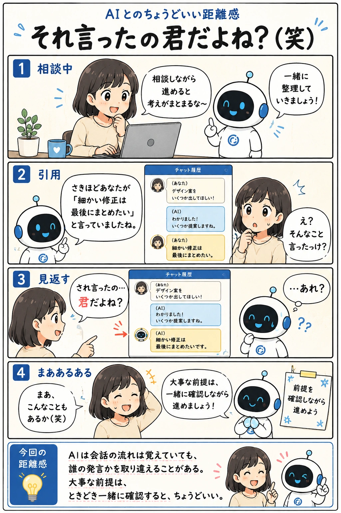

#054
それ言ったの君だよね？（笑）
会話は覚えてる。でも、誰が言ったかは時々あやしい。

メモ
AIは長い会話を整理しながら返事をしてくれるため、以前の内容を引用して話を続けてくれることがあります。
ただ、人と同じように「誰が言ったのか」を取り違えることもあります。会話の内容は合っていても、発言者だけが入れ替わってしまうことがあるのです。
「それ私じゃなくてAIが言ったよね（笑）」と思ったら、気軽に訂正して大丈夫。AIとの会話は、お互いに前提を確認しながら進めるくらいが、ちょうどいい距離感です。
今回の距離感
AIは会話の流れは覚えていても、誰の発言かを取り違えることがある。大事な前提は、ときどき一緒に確認すると、ちょうどいい。